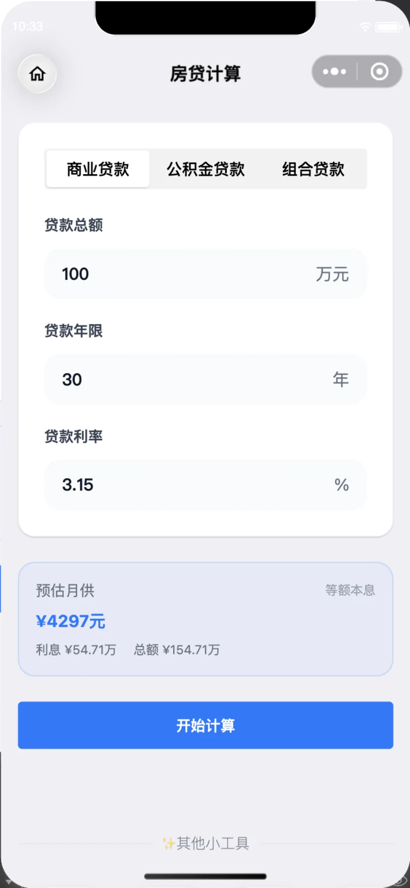
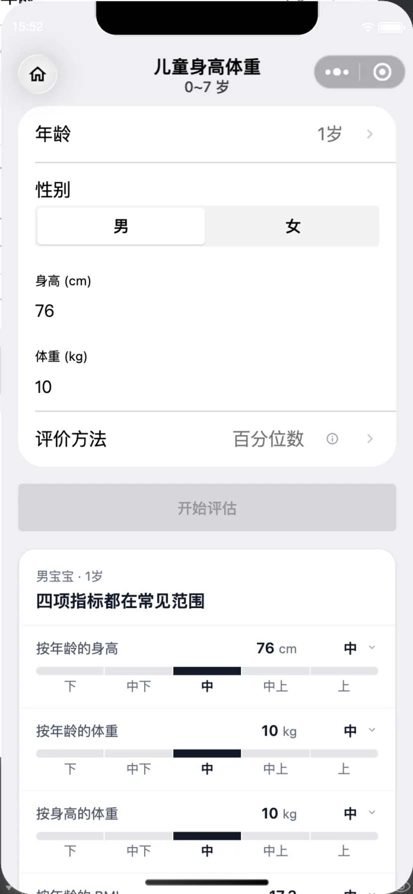

日历与节气
万年历、老黄历、节日节气，还有佛历和道历。公历农历随便切，假期和节气一眼看到。
「小而美工具」是我一个人做的微信小程序：查日历、算房贷、称呼亲戚、看孩子的身高体重。不用下载 App，不用注册，打开微信就能用。
27 款工具 · 无需账号 · 数据留在本机
往下看，挑一个今天用得上的
点一下工具，看看它在小程序里的真实样子。
万年历、老黄历、节日节气，还有佛历和道历。公历农历随便切，假期和节气一眼看到。
成人 BMI、儿童和青少年的身高体重评估，输入一次就能看到结果，记录只留在本机。
加减乘除、房贷、退休年龄。数字的事，交给它算清楚。
亲戚称呼、二维码制作、手电筒——都是打开就能用的。
12 款带预览的可以在上面点开，其余 15 款已上线。
美，是每个细节都到位。
「小而美」不是口号，是这个小程序的取舍：每个工具只做一件事，所有工具共用一套 iOS 质感的界面，打开就知道怎么用。
不用下载 App，不占手机桌面；换手机后重新扫码即可。
搜一搜「小而美工具」，或扫本页任意一个二维码。
点右上角「…」，选择「添加到我的小程序」。
在微信首页下拉，从「我的小程序」里直接进来。
「小而美工具」是什么？一个微信小程序，把 27 款日常小工具放在一起：万年历、老黄历、节日节气、亲戚称呼、BMI、房贷、退休年龄、二维码、手电筒等。
要收费吗？绝大多数工具免费。部分增值内容（例如主题、二维码高清）需要观看视频获得 VIP 时长；不购买也能使用基础功能。
需要注册或登录吗？不需要。没有账号体系，打开就能用。
我的数据存在哪里？计算记录、设置等只保存在本机微信存储里，不上传服务器；换手机或清理微信数据后不会自动恢复。
小程序里有广告吗？有少量广告，用来维持开发和维护。观看视频获得的 VIP 时长可以免广告，也可以继续免费使用带广告的版本。
支持哪些手机？在微信内打开，iOS 和 Android 都可以；建议使用较新的微信版本。
和下载一个 App 有什么区别？不用安装、不占桌面，打开微信就能用；每个工具只做一件事，用完即走。
为什么叫「小而美」？小，是每个工具只解决一件事，不打扰；美，是界面、留白和细节都认真对待。
不是效果图，是小程序里现在的样子。


把查日历、算房贷、称呼亲戚这些小事，交给一个安静的小程序。
扫码，或复制名称去微信搜一搜。